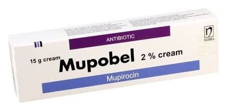

Mupobel %2 Krem , 15 Gram

Ne için kullanılır
KT · Bölüm 1MUPOBEL aktif madde olarak mupirosin içerir. MUPOBEL sadece cilt üzerinde kullanılan bir antibiyotiktir ve bakteriyel cilt enfeksiyonlarının tedavisi için kullanılır. 1/4

MUPOBEL aktif madde olarak mupirosin içerir. MUPOBEL sadece cilt üzerinde kullanılan bir antibiyotiktir ve bakteriyel cilt enfeksiyonlarının tedavisi için kullanılır. 1/4